Truth
Sathya
About
Love All, Serve All. His life, His message, and key moments from 1926 to 2011.
There is only one Language, the Language of the Heart.
His message
For more than 85 years, Sathya Sai Baba walked among us, sharing His divine message that can best be summed up in the words, "Love All Serve All". During His lifetime, He became one of the most revered spiritual teachers in the world, encouraging all of humanity to reconnect with the essential and eternal human values of Truth (Sathya), Right Conduct (Dharma), Peace (Santhi), Love (Prema) and Nonviolence (Ahimsa) in everyday living.
He is also known as Sri Sathya Sai Baba, Sai Baba, Swami, Bhagavan, or simply as Baba to millions of people throughout the world. His followers come from all ages, faiths, and races and meet regularly for devotional programs, to study His teachings, and to engage in service activities in order to practice His message of Love and Peace to unite all mankind.
Read the brochure: A Brief Introduction to Sathya Sai Baba and His Teachings (PDF)
Human values
Sathya
Dharma
Santhi
Prema
Ahimsa
Key milestones
Select a year, use the arrows, or swipe on your phone.
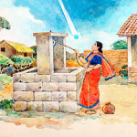
Sathya Sai Baba is Born.
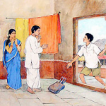
Divine Declaration.
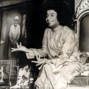
Prasanthi Nilayam inaugurated on HIS 28th birthday
Sathya Sai Baba inaugurates a hospital behind Prasanthi Nilayam
Inauguration of Sanathana Sarathi
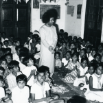
Sri Sathya Sai Bal Vikas started
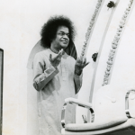
Inauguration of First World Conference and Women's College at Anantapur
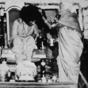
Inauguration of Smt. Eswaramma High School at Puttaparthi
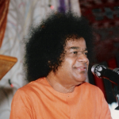
Second World Conference held at Prashanthi Nilayam on Sathya Sai Baba’s 50th birthday celebrations. Inauguration of Sarva Dharma Aikya Stupa
Inauguration of the Sri Sathya Sai Hospital at Whitefield, Bangalore
Third World Conference held at Prashanthi Nilayam on Sathya Sai Baba’s 55th birthday celebrations
Sri Sathya Sai University Puttaparthi launched
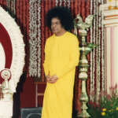
60th Birthday of Sathya Sai Baba
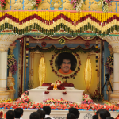
Mahasamadhi
Love All Serve All
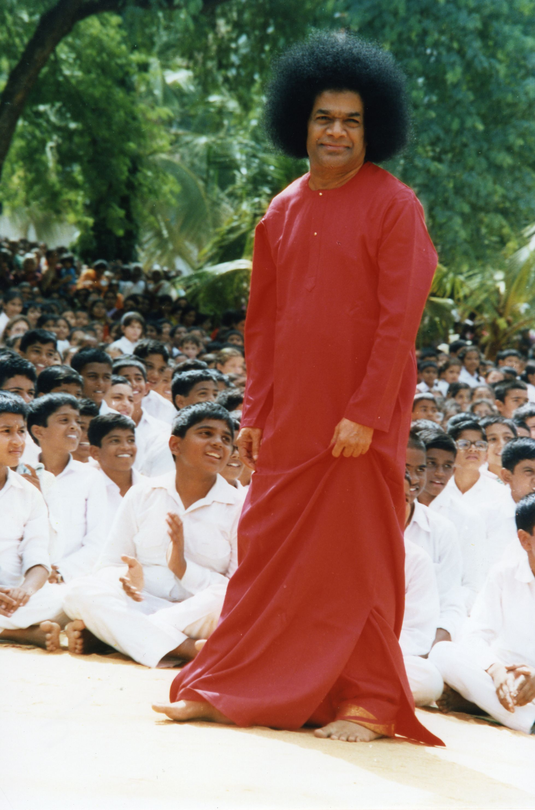
About
Sai Centers in California and Nevada, and the regional team that serves them.
There is only one Caste, the Caste of Humanity.
At a glance
Our team
How the regional team is organized: leadership, the wings, Young Adults, and support roles.
Regional leadership
Wing coordinators
Young Adults
Representatives
Advisors
Regional support
Medical
Web
Media
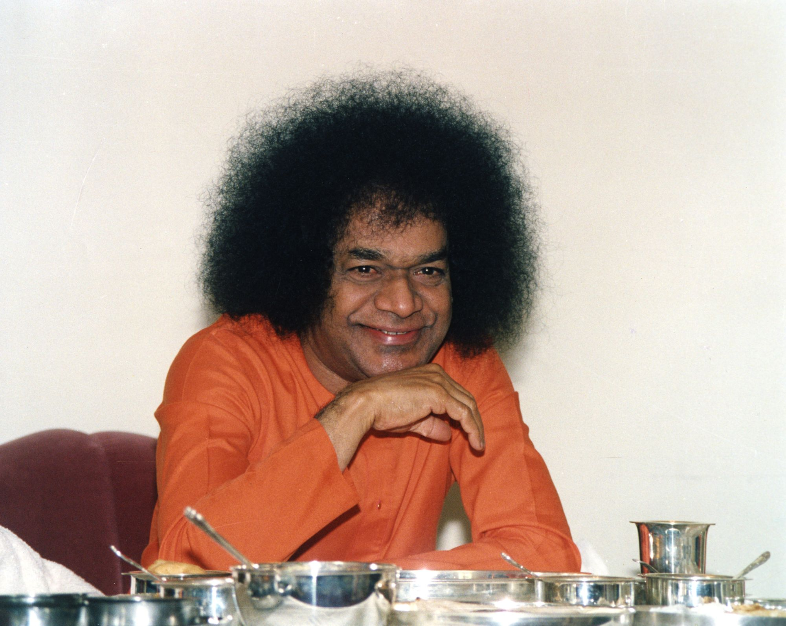
About
Who we are, who is welcome, and the guidelines for our centers.
Have the feeling of oneness permeate all your acts.
Who we are
Centers in over 126 countries. Open to all, with no fees.
There are Sathya Sai Baba centers in various cities across the United States and in over 126 countries around the world. There are 16 Sai centers in the Bay Area. All are welcome, regardless of race, creed, economic status or religious orientation. There is no membership fee to join. The organization undertakes devotional, educational and service activities to further one’s spiritual growth. Members meet regularly in order to study and discuss the teachings of Sathya Sai Baba and to engage in group devotional singing, meditation, and prayer (Devotion).
Many centers have a children’s program (Sai Spiritual Education). Center members also plan and implement a variety of community service projects (Service). In addition, there is an active Young Adult Program in many centers. There is never any solicitation or fee charged for any of the functions that a center conducts. Please contact the regional team or a center near you for additional information.
In Swami’s words
The main objective of the Sathya Sai Organization ... is to help you recognize the divinity inherent in you. So, your duty is to emphasize the One, to experience the One in all you do or speak. Do not give importance to differences of religion, sect, status, or color. Have the feeling of oneness permeate all your acts. Only those who do so have a place in this Organization; the rest can withdraw.
The Sai Organization charter states that every member should undertake spiritual discipline as an integral part of daily life and to abide by the following guidelines
There is only one Caste, the Caste of Humanity;
There is only one Religion, the Religion of Love;
There is only one Language, the Language of the Heart;
There is only One God, and He is Omnipresent.
Documents
Select a document to see what it is, then View or Download it.
Brochure (PDF): an introduction to the Sai Centers of USA Region 7.
View USA Region 7 Brochure (opens in a new tab)Download USA Region 7 Brochure (opens in a new tab)
Brochure (PDF): a short introduction to Sathya Sai Baba and His teachings.
View A Brief Introduction to Sathya Sai Baba and HIS Teachings (opens in a new tab)Download A Brief Introduction to Sathya Sai Baba and HIS Teachings (opens in a new tab)
Booklet (PDF): a guide for people who are new to Sai Centers.
View Newcomer's Guide (opens in a new tab)Download Newcomer's Guide (opens in a new tab)
Guidelines (PDF): how Sai Centers work around the world.
View International Sai Center Guidelines (opens in a new tab)Download International Sai Center Guidelines (opens in a new tab)
Guidelines (PDF): how USA Sai Centers plan and do service.
View USA Sai Center Service Guidelines (opens in a new tab)Download USA Sai Center Service Guidelines (opens in a new tab)
Manual (PDF): a reference for local Young Adult groups.
View USA Young Adults Guidelines (opens in a new tab)Download USA Young Adults Guidelines (opens in a new tab)
Guidelines (PDF): Sai Spiritual Education for children in USA centers.
View USA SSE Guidelines (opens in a new tab)Download USA SSE Guidelines (opens in a new tab)
Guidelines (PDF): rules for USA Sai Center websites.
View Guidelines for USA Sai Websites (opens in a new tab)Download Guidelines for USA Sai Websites (opens in a new tab)
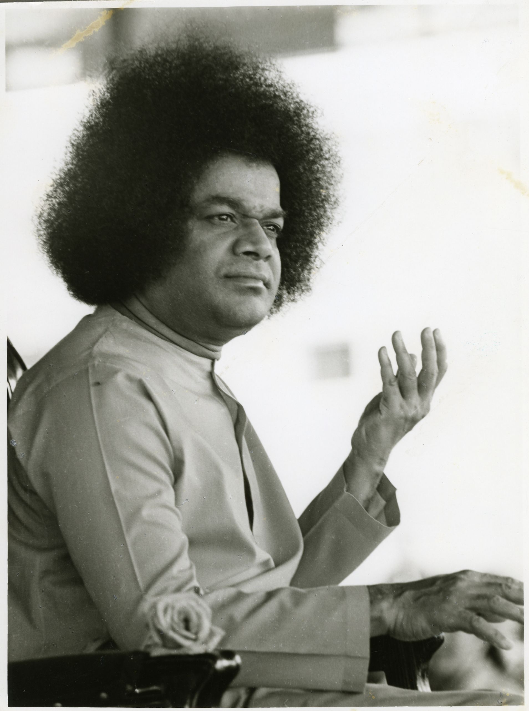
About
Videos, Swami’s discourses, the communication module, letters, and the official logo for officers.
Every activity must be rendered valid and worthwhile by its contribution to the discovery of Truth, both of the Self and of nature.
For officers
Videos, discourses, and tools for center officers. Open a group to see its items.
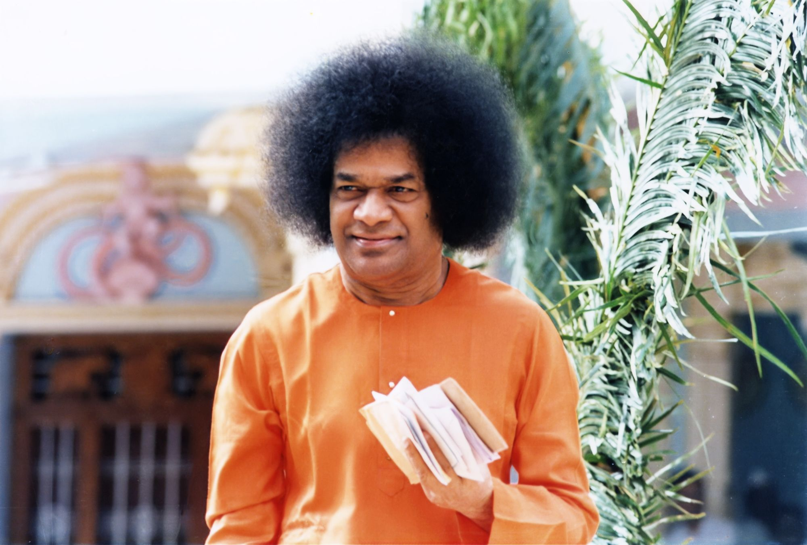
Sai Centers
20 Sai Centers and Groups in Northern California and Nevada. Everyone is welcome. Times can change, so please call ahead for a first visit.
Keep good company. Visit places of worship and saintly people.
Map
Select a teal pin to see the center, its address, and directions. 15 centers and 5 groups.
All centers
Meeting times, addresses, and service activities for each center.
Sri Sathya Sai Baba Center of Central San Jose
Food Service
Elder Care
Environment
Living Care
Special
Study circles
Sri Sathya Sai Baba Center of Elk Grove
Environment Services
Living Care
Education
Sri Sathya Sai Baba Group of Evergreen
Sri Sathya Sai Baba Center of Fremont
Food
Education
Environment
Sri Sathya Sai Baba Center of Fresno
Animal Service
Devotional Service
Sri Sathya Sai Baba Group of Marin
Food Service
Living Care
Sri Sathya Sai Baba Group of Monterey Peninsula
Food Service
Devotion
Sri Sathya Sai Baba Center of Tracy/Mountain House
Sri Sathya Sai Baba Center of Oakland
Food Service
Multi-Culturally Friendly Format
Sri Sathya Sai Baba Center of Peninsula
Food Service
Career
Environment Care
Eldercare
Living Care
Sri Sathya Sai Baba Center of Reno, NV
Food Service
Education
Community
Sri Sathya Sai Baba Center of Sacramento
Food Service
Career
Living
Education
Environment
Eldercare
Sri Sathya Sai Baba Group of San Bruno
Food Service
Environment
Sri Sathya Sai Baba Center of San Francisco
Food Service
Living
Sri Sathya Sai Baba Center of San Jose
Food Service
Community
Sri Sathya Sai Baba Center of Santa Cruz
Food Service
Living
Medical
Eldercare
Disaster relief
Sri Sathya Sai Baba Center of Santa Rosa
Food Service
Living Care
Animal Care
Sri Sathya Sai Baba Center of Stockton
Food Service
Community
Devotional Service
Sri Sathya Sai Baba Center of Tri-Valley
Food Service
Living
Education
Special
Environmental
Animal care
Sri Sathya Sai Baba Group of West San Jose